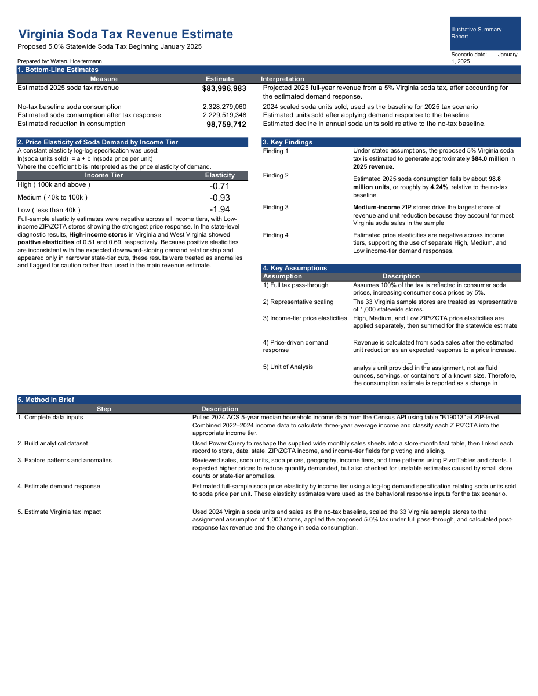

Applied Economics / Public Policy
Virginia Soda Tax Policy Analysis
Demand Elasticity & Revenue Simulation
An illustrative economic analysis of a hypothetical 5% soda tax in Virginia, examining consumer responses across income groups, price elasticity of demand, and projected tax revenue under alternative pass-through assumptions.
Research Presentation
The presentation can be viewed and scrolled through directly above. PDF controls depend on your browser.

Supporting Materials
Data, Power Query Code & Supporting Files
| File | Description |
|---|---|
| Excel Data | Dataset used for the soda-tax analysis and economic simulation. |
| Power BI / Power Query | Power Query M scripts for data preparation and Census data integration. |
| Research Presentation | Complete policy analysis presentation. |
Technical note: The Power BI file preserves the Power Query transformations but is currently disconnected from its original data sources. Connection paths must be updated before the queries can be refreshed.
Research Notes
This project uses simulated retail sales data and ZIP-code-level income information. Estimated elasticities and revenue projections are illustrative and should not be interpreted as observed policy effects or official forecasts.